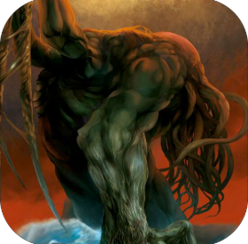

このサイトについて
クトゥルフ神話TRPGを初めてやる人向けのサイトです。
何も知らない人に説明するのが大変だと感じ、説明のサポートをするために作成しました。
こちらは無料で公開されている、
「新クトゥルフ神話TRPG クイックスタート・ルール」を参考にしています。
クトゥルフ神話TRPG（６版）でも最低限遊べるように説明をしたものになります。
基本的にはGMやルールブックを持った友達に聞きながら進めることを推奨しています。

クリックで移動
「新クトゥルフ神話TRPG クイックスタート・ルール」
TRPGとは？
TRPG（テーブルトーク・ロールプレイングゲーム）は、プレイヤーが会話や演技を通じて物語を作り上げる対話型のゲームです。
キャラクターを演じ、KP（キーパー）が提示する世界を探索し、ダイスによる判定や会話を通じて物語が展開していきます。
自由度の高いプレイが魅力で、ルールのもとに想像力を働かせながら、プレイヤーたちが即興で物語を紡いでいきます。
クトゥルフ神話TRPGの公式webサイト
公式クトゥルフ神話TRPGのWebサイトです。
こちらでもTRPGを始めるにあたっての説明がされています。
また、ルールブックがあります。
もし今後も遊ぶ場合は購入することを推奨する。